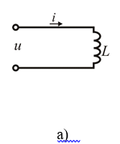
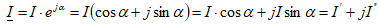
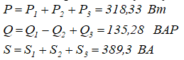

БИР ФАЗАЛИ СИНУСОИДАЛ ТОК ЗАНЖИРЛАРИНИ ХИСОБЛАШ
Қиймати ва йўналиши синусоидал қонун асосида даврий ўзгарувчан ЭЮК (электр юритувчи куч) е, кучланиш u
ва ток i ларни синусоидал ўзгарувчан катталиклар дейилади.
6 – расмда синусоидал ток - тасвири кўрсатилган. Бунда - тегишли синусоидал токнинг оний ва
амплитуда
(максимал) қийматлари: - радианда ўлчанувчи фаза қиймати (синус аргументи); - бурчак частотаси
дейилади ва у бир секунддаги даврлар сонига тенгдир. Синусоидал миқдорнинг тебраниш фазасининг 2
бурчакка тўла ўзгариш вақтини унинг даври Т дейилади. Бир секунддаги даврлар сонини частота f дейилади,
у герц (Гц) билан ўлчанади, яъни . Ҳар бир давр Т дан сўнг синусоидал катталиклар ва u лар қайта даврий
ўзгаради, яъни бўлади. Демак . 7 – расмда синусоидал ўзгарувчан катталиклар, е, i, u ларнинг тасвирлари
кўрсатилган. Бунда координата ўқлари боши ( t ёки ) да тебраниш фазалари турлича, яъни кучланишнинг
бошланғич ( t = 0 даги) фазаси , ЭЮК ники мусбат, токнинг эса (манфий) бўлади. Кўпинча ток фазасининг
кучланиш фазасига нисбатан силжиш бурчаги тушунчасидан фойдаланилади. Агар , яъни бўлса, кучланиш фазаси
ўзувчи, токнинг фазаси эса, орқада қолувчи дейилади ва аксинча.
Шунингдек, синусоидал катталиклар ЭЮК, кучланиш ва токнинг таъсир этувчи (эффектив) қийматлари E, I, U
тушунчасидан ҳам кенг фойдаланилади. Хусусан, ток I деб синусоидал i токнинг шундай ўзгармас бўлган
қийматига айтиладики, у I токи бирор резистор қаршилиги R дан ўтганда Т вақт давомида ажраладиган
иссиқлик энергияси I2RТ бўлиб синусоидал ўзгарувчан ток ўтганда эса га тенг бўлади, яъни деб қабул
қилинади. Бу тенгликдан i ўрнига қўйилса, олинади. Демак ва бўлади. Синусоидал ток занжирларидаги
амперметр ва вольтметрлар токнинг ўрта квадратик ва кучланишнинг ўрта квадратик қийматини ифодалайдилар.
Барча электр станцияларида синусоидал ток ишлаб чиқарилади. Бунинг учун, кўпинча 50 Гц частота,
юқори
қийматли кучланиш ва қувватларига мўлжалланган синхрон генераторларидан фойдаланилади.
Қуйидаги R, L ва С элементли ўзгарувчан ток занжирларидаги ток, кучланиш ва ЭЮКларнинг ўзаро ўзгариш
қонуниятлари билан қисқача танишиб чиқамиз.
Актив қаршиликли синусоидал ток занжири. Электр энергиясининг бир қисмини ёки ҳаммасини бошқа
турдаги
фойдали энергияга, масалан иссиқликка, ёруғликка ёки механик энергияга айлантирувчи занжир элементининг
қаршилиги актив қаршилик дейилади. 8 – расм а, б, в да R қаршиликли занжир схемаси, ундаги ток ва
кучланишнинг ўзгариш графиги ҳамда вектор диаграммаси кўрсатилган.
8-расм. Актив қаршилиги синусоидал ток занжири: а) – схемаси; б) – ундаги ток ва кучланишнинг ўзгариш
графиги: в) – вектор диаграммаси.
Агар бу занжирга синусоидал кучланиш берилса, ундан ўтадиган ток ҳам синусоидал бўлади. Унинг
фазаси эса
кучланиш фазасига мос, яъни ток ва кучланиш векторлари бир томонга йўналсин. Бунда ёки бўлади. Актив
қаршиликда унга берилган электр энергияси фақат R нинг қизишига сарфланади.
Индуктив қаршиликли синусоидал ток занжири. Индуктивлиги L бўлган занжир ўзгарувчан ток манбаига уланган
бўлиб ундан ўзгарувчан ток ўтмоқда (9 – расм а). Бу ток ғалтак атрофида ўзгарувчан магнит оқим ҳосил
қилади. Ғалтакда ўзиндукция ЭЮК и еL ҳосил бўлади. Бу занжир учун Кирхгофнинг 2 – қонуни қуйидагича
ёзилади:

9-расм. Индуктив қаршиликли синусоидал ток занжири а-схемаси; б-ундаги ток ва кучланишнинг ўзгариш
графиги; в-вектор диаграммаси.
Занжирда ток синусоидал
бўлганда кучланиш қандай ўзгаришини аниқлаймиз:
Демак, индуктив қаршиликли ўзгарувчан ток занжирида кучланиш ҳам синусоидал ўзгаради ва токдан доимо 900
олдинда бўлади. 9 – расм б ва в да ток ва кучланишнинг синусоидалари ҳамда вектор диаграммаси
кўрсатилган. Ифодадан:
индуктив қаршилик дейилади ва Ом бирлигида ўлчанади.
Сиғим қаршиликли синусоидал ток занжири. Сиғим қаршилиги занжирга синусоидал кучланиш берилганда
занжирдан ўтаётган токнинг қандай ўзгаришини аниқлаймиз (10 – расм).
Бу ифодадан кўриниб турибдики, сиғим қаршиликли занжирда кучланиш вектори ток векторидан 90
0 кейинда
бўлар экан. Ток ва кучланиш синусоидаллари ҳамда вектор диаграммаси 10 – расм б ва в да кўрсатилган.
бу ерда - сиғим қаршилик дейилади ва Ом бирлигида ўлчанади. Сиғим қаршилиги занжирда қувватнинг оний
қиймати:
Актив, реактив элементлар кетма – кет уланган синусодал ток занжири. (11 – расм).
Бу занжир кучланиш манбаига уланганда айрим муносабатларни олиш учун вектор диаграммадан фойдаланилади.
Диаграмма ток векторини ўтказишдан бошланади (11 – расм). вектор ток вектори йўналишида, вектор ток
векторидан 900 га олдинда, вектори ток векторидан 900 га орқага қилиб кўрилади. Занжирга берилган
кучланишнинг вектори, шу занжирдаги элементлар кучланишлари векторларининг геометрик йиғиндисидан
иборат, яъни: ифода берилган занжир учун Кирхгофнинг 2 – қонуни ифодалайди.
Кучланишлар учбурчаги ОМР томонларини ток I га бўлиб, қаршиликлар учбурчаги ҳосил қилинади (11–расм). Бу
учбурчакдан:

бу ерда φ ток ва кучланиш векторлари орасидаги фаза силжиш бурчаги.
Агар кучланишлар учбурчагининг ҳар бир томонини ток I га кўпайтирсак қувватлар учбурчаги келиб чиқади
(11–расм). Бу учбурчакдан:
Индуктив X L ва сиғими ХС қаршиликларнинг бир – биридан катта кичиклигига қараб
электр занжирлари уч хил характерга эга бўлиши мумкин:
Актив, индуктив ва сиғимий қаршиликлар параллел уланган синусоидал ток занжири (12 – расм). Бу занжир
синусоидал кучланиш манбаига уланганда айрим муносабатларни олиш учун вектор диаграммадан фойдаланамиз.
Диаграмма кучланиш векторини қуришдан бошланади (12 – расм). вектор кучланиш вектори йўналишида, вектор
кучланиш векторидан 90 0 орқада, вектор эса кучланиш векторидан 90 0 олдинда
қилиб қурилади. Кирхгофнинг 1
– қонунига биноан, айрим параллел тармоқлардаги токларнинг йиғиндиси манбадан келаётган ток I га тенг,
яъни: . Параллел уланган занжир учун Ом қонуни қуйидагича ёзилади:
Индуктив вL ва вС сиғимий ўтказувчанликларнинг бир - биридан катта – кичиклигига қараб электр занжири уч
хил характерга эга бўлиши мумкин:
Синусоидал катталикларни комплекс сон кўринишда тасвирлаш.
Синусоидал ток, кучланиш, ЭЮК ва тўла қаршилик комплекс сон кўринишда тасвирланса, синусоидал ток
занжирларни ҳисоблаш анча осонлашади. Барча комплекс катталиклар уч кўринишда тасвирланади:
алгебраик кўринишдан кўрсатгичли (геометрик) кўринишга ўтишда қуйидаги умумий формуладан фойдаланилади:
Кўрсатгичли (геометрик) кўринишдан алгебраик тригонометрик кўринишга ўтиш учун қуйидаги формуладан
фойдаланилади:

Ток вектори актив R қаршиликка кўпайтирилса, унинг қиймати ўзгаради, индуктив қаршиликка кўпайтирилса,
унинг қиймати билан биргаликда йўналиши +90 0 га, сиғимий қаршиликка кўпайтирилганда эса
–90 0 га ўзгаради. Масалан, 11– расмдаги занжир учун Кирхгофнинг 2 – қонуни қуйидагича
ёзилади:
Занжирнинг комплекс тўла қуввати қуйидагича аниқланади: S=UI , бу ерда - комплекс ток I нинг кўзгу
қиймати.
Бир фазали ўзгарувчан ток занжирига оид масала.
Масала
Занжир 13 – расмда кўрсатилган бўлиб қуйидаги параметрлари берилган:
Тармоқлардаги токлар, актив реактив ва тўла қувватлар комплекс усул ёрдамида аниқлансин, ҳамда ток ва
кучланишларнинг вектор диаграммаси қурилсин.
Масаланинг ечилиши
1. Ҳар бир тармоқнинг комплекс қаршилигини топамиз:
2. Бутун занжирнинг комплекс қаршилигини топамиз:

3. Берилган кучланишни комплекс кўринишда ифодалаймиз:
4.Тармоқлардаги токларни Ом қонуни асосида аниқлаймиз:
токларни топишдан аввал в ва с тугунлар орасидаги кучланишни аниқлаймиз, яъни:
5. Занжир айрим тармоқларнинг актив, реактив ва тўла қувватларини аниқлаймиз.

6. Бутун занжирнинг актив, реактив ва тўла қувватиларини аниқлаймиз:

Бутун занжирнинг актив, реактив ва тўла қувватларини қуйидагича аниқлаш ҳам мумкин:
бунда Р=320 Вт, Q=130 ВАр.
7. Ток ва кучланишлар вектор диаграммасини қурамиз. Бу диаграммани қуришни вектордан бошлаш қулайроқ (14
– расм). Бунинг учун горизонтал ўқ бўйлаб масштаб бўйича векторни жойлаштирамиз (кучланиш векторининг
масштаби /). векторга нисбатан ток векторини бурчак остида, ток векторини бурчак остида, (ток
векторининг масштаби ) жойлаштирамиз. ва векторларининг йиғиндиси умумий токнинг векторини ташкил
қилади.
Кирхгофнинг 2 – қонунига биноан: бунда
кучланиш векторини аниқлаш учун ток векторининг йўналиши бўйича кучланиш масштабида актив кучланиш
тушуви вектори ни жойлаштирамиз. Унга перпендикуляр равишда индуктив кучланиш тушуви вектори ни
жойлаштирамиз. ва векторларининг йиғиндиси векторни ҳосил қилади. ва векторларини қўшиш натижасида
занжирга берилган кучланиш векторини ҳосил қиламиз. ва векторлар орасидаги бурчак занжирнинг умумий токи
билан кучланиши орасидаги фаза силжиш бурчагини ташкил этади.
2-масала. Индуктивлиги L = 100 мГн бўлган ғалтак кучланиши ва частотаси f = 50 Гц бўлган ўзгарувчан ток
тармоғига уланган.
Қуйидагилар аниқлансин:
1) токнинг эффектив ва оний қийматлари;
2) қувватнинг оний ва ўртача қийматлари;
3) ғалтак магнит майдонида йиғилган энергиянинг максимал қиймати;
4) агар тармоқ кучланишининг частотаси икки марта ортса, ток эффектив қийматининг миқдори қандай
ўзгаради?
Ечиш. 1. Актив қаршилиги кичик бўлгани учун уни ҳисобга олинмайди
. деб қабул қилиш мумкин.
Токнинг эффектив қиймати:
Токнинг максимал қиймати:
Фақат индуктив қаршиликли занжир учун токнинг оний қиймати:
2. Қувватнинг оний қиймати:
3. Ғалтакнинг магнит майдонида йиғилган энергия:

Энергиянинг максимал қиймати:
Таъминловчи тармоқ кучланишининг частотаси икки марта ортиши билан, токнинг миқдори икки марта камаяди,
чунки индуктив қаршилик икки марта ортади:
3-масала. Синусоидал бўлган
кучланишларниқийматлари бўйича вектор диаграммасини тузиб, занжирдаги умумий кучланишни ўзгариш
қонунияти аниқлансин.
Масштаб танлаб, ток ва кучланишлар вектор ифодасини ва вақт бўйича ўзгарувчан диаграммасини тузамиз.
Бунда R ва x L қаршиликлардаги кучланиш: UR = IR = 2,24 ∙ 49 =
115(B);
UL = IЛ ХL= 2,24 ∙100 = 224(B);